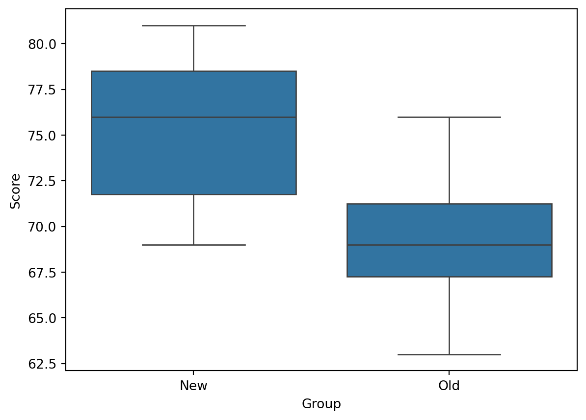
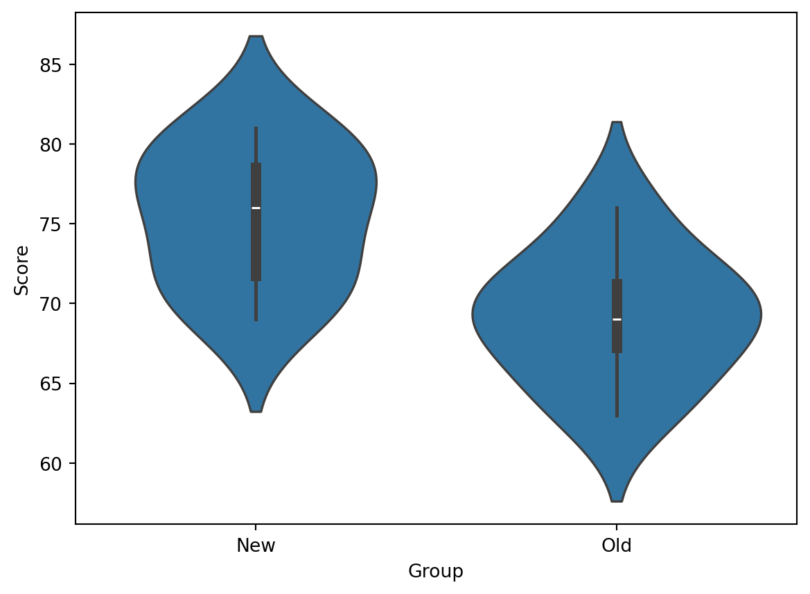
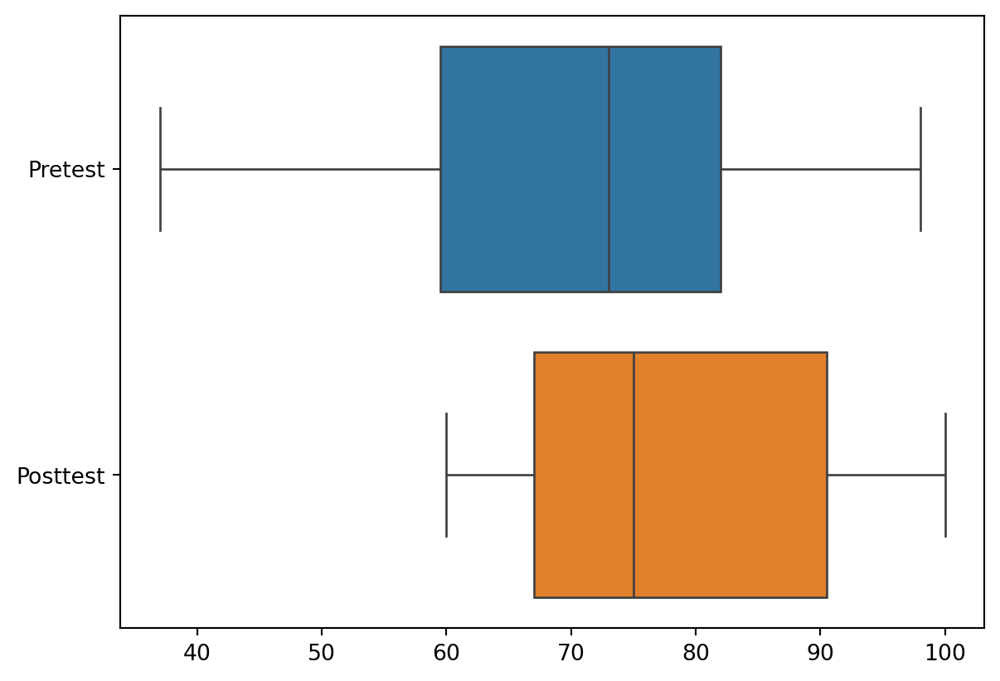
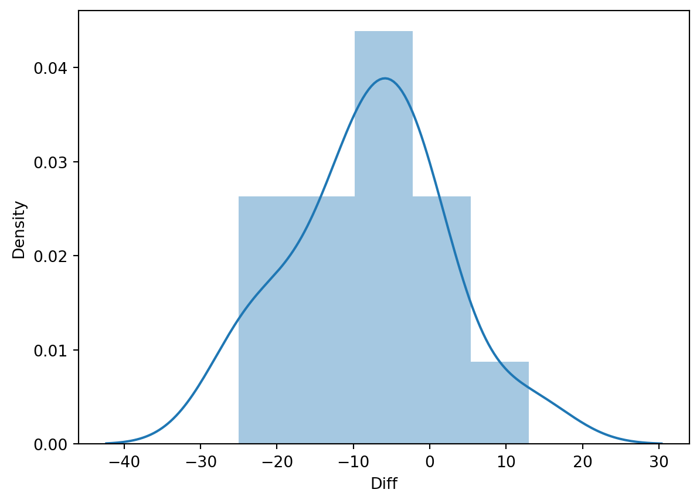

import pandas as pd
url = "https://raw.githubusercontent.com/SHINJIHAN/advanced-bigdata/main/data/Reading.csv"
Reading = pd.read_csv(url)
Reading.head()| ID | Group | Score | |
|---|---|---|---|
| 0 | 1 | New | 75 |
| 1 | 2 | New | 80 |
| 2 | 3 | New | 72 |
| 3 | 4 | New | 77 |
| 4 | 5 | New | 69 |
두 모집단의 모평균, 모비율, 모분산의 차이에 대한 가설검증 문제를 다루고자 한다. (12장: 두 모집단의 비교와 이어지는 내용이다.)
표본 평균을 추정하려면, 표본의 크기와 모분산을 고려해야 한다.
[1] 두 모분산 σ12, σ 22 이 모두 알려져 있는 경우,
두 모평균 차에 대한 “추정량” ⇨ “두 표본평균의 차” 통계적 추론을 위한 “준비물” ⇨ “추정량의 분포”
이 분포는 다음과 같은 평균과 분산을 가진 정규분포를 따른다:
표준화된 확률변수 Z는 표준정규분포 N(0, 1)를 따른다.
[2] 두 모분산 σ12, σ 22 을 모두 모르는 경우, 표본의 크기를 고려하게 된다. 표본의 크기가 충분히 큰 경우 ( 25 이상 )
중심극한정리에 의해 모집단의 분포에 관계없이 x̄ 와 ȳ 가 근사적으로 정규분포를 따른다. 두 모분산의 추정치인 표본분산 s₁², s₂² 를 고려한 통계량을 사용하여 검정을 수행한다.
[3] 두 모집단이 알려져 있지는 않지만, 모분산이 동일한 것으로 가정할 수 있는 경우, 다음과 같은 평균과 분산을 가지는 정규분포를 따르며, [1]과 동일하다.
공통분산 σ ² 의 합동추정량 (Pooled Variance) 자유도 n ₁ + n ₂ – 2인 t-분포를 따른다.
[4] 두 모분산이 서로 다른 경우, [3]번 식은 t-분포를 따르지 않는다. 단, 아래와 같이 자유도를 수정할 경우, 근사적으로 t-분포를 따르게 된다. 근사적으로 t-분포를 따르게 된다. 수정된 자유도(df).
독립표본에 의한 두 모평균의 비교 두 개의 서로 독립적인 집단의 평균을 비교하여 그 차이가 통계적으로 유의한지 판단하는 방법이다.
사례: 새로운 강의방식이 초등학생 독해력 향상에 도움이 되는가?
import pandas as pd
url = "https://raw.githubusercontent.com/SHINJIHAN/advanced-bigdata/main/data/Reading.csv"
Reading = pd.read_csv(url)
Reading.head()| ID | Group | Score | |
|---|---|---|---|
| 0 | 1 | New | 75 |
| 1 | 2 | New | 80 |
| 2 | 3 | New | 72 |
| 3 | 4 | New | 77 |
| 4 | 5 | New | 69 |
가설검증을 결정하기 전에 데이터를 시각화한다.
import seaborn as sns # 박스 플롯
sns.boxplot(x = 'Group', y = 'Score', data = Reading)
중위수와 같은 요인을 비교한 결과, 차이가 나타나므로 이를 근거로 검증을 진행할 수 있다.
# 바이올린 플롯
sns.violinplot(x = 'Group', y = 'Score', data = Reading)
# 기술통계량
Reading.groupby('Group').Score.describe()| count | mean | std | min | 25% | 50% | 75% | max | |
|---|---|---|---|---|---|---|---|---|
| Group | ||||||||
| New | 8.0 | 75.375 | 4.373214 | 69.0 | 71.75 | 76.0 | 78.50 | 81.0 |
| Old | 8.0 | 69.125 | 4.086126 | 63.0 | 67.25 | 69.0 | 71.25 | 76.0 |
양측검정 적용.
# 그룹 나누기
New = Reading[Reading.Group == 'New']
Old = Reading[Reading.Group == 'Old']
# 양측검증:
# 두 강의 방식에 차이가 있다. vs 차이가 없다.
from scipy.stats import ttest_ind # 독립 t-검정
ttest_ind(New.Score, Old.Score, equal_var = True)
# T통계량: 그룹 간 평균 차이가 실제로 존재하는지를 나타내는 통계량.
# 통계량이 클수록 차이가 있을 가능성이 높다.
# [3]번 통계량: statistic=2.9536127902039953
# 두 꼬리 검정에서의 p-값: pvalue=0.010470744188033123
# 통상적으로 p-값이 0.05보다 작으면 귀무가설을 기각할 수 있다.
# 즉, 두 강의 방식에 차이가 있다고 결론 내릴 수 있다.TtestResult(statistic=np.float64(2.9536127902039953), pvalue=np.float64(0.010470744188033123), df=np.float64(14.0))양측검증을 수행한 뒤, p-value를 2로 나누어 단측 검정을 수행한 것과 동일한 결과를 얻고 있다.
# 단측검정:
# 새로운 학습법이 더 효과적이다. vs 효과적이지 않다.
stat, pval = ttest_ind(New.Score, Old.Score, equal_var = True)
print("P", pval/2)
# p-값이 0.0052로 유의수준 0.05보다 작으므로, 대립가설을 채택할 수 있다.P 0.005235372094016561단측검정과 등분산 가정 적용.
# 단측검정
from statsmodels.stats.weightstats import ttest_ind
ttest_ind(New.Score, Old.Score, alternative = 'larger',
usevar = 'pooled') # 등분산 가정 적용:
# 두 그룹 간의 분산이 동일하다고 가정(np.float64(2.9536127902039953),
np.float64(0.005235372094016561),
np.float64(14.0))단측검정과 이분산 가정 적용.
# 단측검정
ttest_ind(New.Score, Old.Score, alternative = 'larger',
usevar = 'unequal') # 이분산 가정 적용:
# 두 그룹의 분산이 서로 다르다는 가정
# [4]번 통계량: usevar= 'pooled' ⇨ 'unequal'
# 14 ⇨ 13.935945095796395 (자유도가 실수로 바뀜)(np.float64(2.9536127902039953),
np.float64(0.005256688626975243),
np.float64(13.935945095796395))결론적으로, 새로운 강의방식이 초등학생 독해력 향상에 도움이 된다고 할 수 있다.
대응표본에 의한 두 모평균의 비교 어떤 신발의 마모율을 비교할 때, 독립 표본 검정에 경우, 한 그룹의 사람이 왼쪽 신발을 신고, 다른 그룹의 사람이 오른쪽 신발을 신더라도 상관이 없다. 하지만 대응 표본 검정은 동일한 사람이 왼쪽 신발과 오른쪽 신발을 모두 신어야 만 한다. 각 쌍이 서로 연관되어 있으므로 두 신발을 신는 사람이 동일해야 하며, 표본의 수도 일치해야 한다.
이는 마모율에 영향을 줄 수 있는 교락 요인(confounding factor), 즉 신발을 신는 사람의 특성 등을 배제하기 때문이다.
그러므로, 대응 표본 검정은 같은 대상에 대한 실험 전후의 결과를 비교할 때 주로 사용된다.
import pandas as pd
url = "https://raw.githubusercontent.com/SHINJIHAN/advanced-bigdata/main/data/Paired.csv"
Paired = pd.read_csv(url)
Paired.head()| ID | Pretest | Posttest | |
|---|---|---|---|
| 0 | 1 | 80 | 82 |
| 1 | 2 | 73 | 71 |
| 2 | 3 | 70 | 95 |
| 3 | 4 | 60 | 69 |
| 4 | 5 | 88 | 100 |
박스플롯 시각화 및 기술 통계량 출력.
import pandas as pd
import seaborn as sns
# Pretest와 Posttest에 대한 박스플롯 시각화
sns.boxplot(data = Paired.iloc[:, [1, 2]],
orient = 'h') # 수평 방향
# Pretest와 Posttest의 차이 계산 및 새로운 열(Diff) 추가
Paired["Diff"] = Paired.Pretest - Paired.Posttest
# = 교육 전 성적 - 교육 후 성적
# 교육이 효과가 있다면 교육 후 성적이 더 높을 것이므로
# 결과적으로는 변수 Diff의 값이 음수로 나와야 한다.
두 변수에 대한 상자 그림
Paired.iloc[:,1:4].describe()
# 변수 Diff 평균(mean)이 -7.93이며
# 실제로 그래프 상에서도 대부분의 개체에서
# 변수 Diff의 값이 0보다 작음을 볼 수 있다.
# 표준편차(std)는 데이터의 산포도(변동성)를 측정하는 지표로,
# 데이터가 평균으로부터 얼마나 떨어져 있는지를 나타낸다.
# 표준편차는 항상 0 이상의 값을 가지며, 음수가 될 수 없다.
# 이는 표준편차가 데이터 값의 차이를 제곱하여 계산하기 때문이다.| Pretest | Posttest | Diff | |
|---|---|---|---|
| count | 15.000000 | 15.000000 | 15.000000 |
| mean | 70.266667 | 78.200000 | -7.933333 |
| std | 18.041487 | 14.313829 | 9.931671 |
| min | 37.000000 | 60.000000 | -25.000000 |
| 25% | 59.500000 | 67.000000 | -12.500000 |
| 50% | 73.000000 | 75.000000 | -7.000000 |
| 75% | 82.000000 | 90.500000 | -2.500000 |
| max | 98.000000 | 100.000000 | 13.000000 |
히스토그램 및 커널 밀도 추정(KDE) 시각화
sns.distplot(Paired.Diff)
# Seaborn의 최신 버전에서는 더 이상 지원되지 않으므로,
# sns.histplot 또는 sns.kdeplot을 사용하는 것이 권장된다.C:\Users\user\AppData\Local\Temp\ipykernel_18240\4004193321.py:1: UserWarning:
`distplot` is a deprecated function and will be removed in seaborn v0.14.0.
Please adapt your code to use either `displot` (a figure-level function with
similar flexibility) or `histplot` (an axes-level function for histograms).
For a guide to updating your code to use the new functions, please see
https://gist.github.com/mwaskom/de44147ed2974457ad6372750bbe5751

import matplotlib.pyplot as plt
import seaborn as sns
# 히스토그램 그리기
sns.histplot(Paired.Diff,
stat = 'density') # y축을 밀도로 변경
# KDE만 수정하기 위해 따로 그리기
sns.kdeplot(Paired.Diff,
fill = True) # 음영 처리
plt.xlim(-40, 30) # x축 범위 설정
양측검정 적용
# ttest_rel에서 rel은 paired 또는 related를 의미한다.
# 이 함수는 대응표본 t-검정을 수행하는 것으로,
# 두 관련된 표본에 대한 평균의 차이를 비교하는 데 사용된다.
from scipy.stats import ttest_rel
ttest_rel(Paired.Pretest, Paired.Posttest)
# p-값이 0.0079(0.79%)로 0.05(5%)보다 작기 때문에
# 귀무가설을 기각하고 대립가설을 채택할 수 있다.
# 이는 두 표본 간에 유의미한 차이가 있음을 의미한다.TtestResult(statistic=np.float64(-3.093705670004429), pvalue=np.float64(0.007930923229026533), df=np.int64(14))양측검증을 수행한 뒤, p-value를 2로 나누어 단측 검정을 수행한 것과 동일한 결과를 얻고 있다.
stat, pval = ttest_rel(Paired.Pretest, Paired.Posttest)
print("one-sided p-value =", pval/2)
# 이 경우에도, p-값이 0.05보다 작으므로
# 귀무가설을 기각하고 대립가설을 채택할 수 있다.one-sided p-value = 0.003965461614513267결론적으로 컴퓨터 교육을 실시하기 전과 후의 성적에 차이가 있으며, 사후 테스트의 결과가 더 좋다고 할 수 있다.
Fisher's Exact Test
독립표본에 의한 두 모비율의 비교 두 모비율에 대한 검정을 수행하기 위해 사용할 수 있는 대표적인 검정법은 두 독립된 이항분포의 비율에 대한 z-검정이다.
사례: 현 정부에 대한 지지율이 성인 남녀별로 차이가 있는가?
import pandas as pd
url = "https://raw.githubusercontent.com/SHINJIHAN/advanced-bigdata/main/data/Support.csv"
Support = pd.read_csv(url)
Support.head()| ID | Gender | YesNo | |
|---|---|---|---|
| 0 | 1 | Male | No |
| 1 | 2 | Female | Yes |
| 2 | 3 | Female | No |
| 3 | 4 | Female | No |
| 4 | 5 | Female | No |
이 데이터에 대한 2차원 분할표(빈도표) 작성하기.
import pandas as pd
SupportTable = pd.crosstab(index = Support["Gender"],
columns = Support["YesNo"])
SupportTable| YesNo | No | Yes |
|---|---|---|
| Gender | ||
| Female | 96 | 104 |
| Male | 140 | 110 |
행 백분율 계산하기.
pd.crosstab(index=Support["Gender"], columns=Support["YesNo"],
normalize = "index") # 각 행의 합을 기준으로 비율을 계산| YesNo | No | Yes |
|---|---|---|
| Gender | ||
| Female | 0.48 | 0.52 |
| Male | 0.56 | 0.44 |
다음과 같은 교차 테이블(Cross Table)을 만들 수 있다.
양측검증 적용.
from scipy.stats import fisher_exact
fisher_exact(SupportTable,
alternative = 'two-sided')
# 이 결과는 검정 통계량이 0.725이고
# p-값이 0.106(10.6%)이다.
# 이는 일반적으로 사용되는 유의 수준 0.05(5%)에서
# 통계적으로 유의하지 않다는 것을 의미한다.
# 결론적으로, 두 그룹(또는 변수) 간에 유의한 차이 또는
# 연관성을 찾지 못했다는 것을 나타낸다.SignificanceResult(statistic=np.float64(0.7252747252747253), pvalue=np.float64(0.10634531219761142))정규 근사 검정
이항분포의 표본 크기 n이 충분히 크면, 이항분포는 정규분포로 근사할 수 있으며, 이를 정규 근사라고 한다. 일반적으로 n×p와 n×(1 − p)가 모두 5 이상이면, 정규분포로 근사할 수 있다고 간주한다.
이러한 정규화된 변수를 제곱하면, 자유도가 1인 카이제곱 분포를 따른다. 카이제곱검정(Chi-Square Test) 적용.
from scipy.stats import chi2_contingency
chi2_contingency(SupportTable)
# 카이제곱 통계량: 2.54
# 유의 수준이 일반적으로 0.05(5%)인 경우,
# p-값이 0.111(11.1%)이므로 귀무가설을 기각할 수 없다.
# 따라서 이 결과는 두 변수 간에 통계적으로
# 유의한 연관성이 없다고 결론지을 수 있다.
# 즉, 이 교차표에 따르면 두 변수는 독립적이다.Chi2ContingencyResult(statistic=np.float64(2.5395141968952935), pvalue=np.float64(0.1110289428837834), dof=1, expected_freq=array([[104.88888889, 95.11111111],
[131.11111111, 118.88888889]]))결론적으로, 현 정부에 대한 지지율이 성인 남녀별로 차이가 없다고 할 수 있다.
대응표본에 의한 두 모비율의 비교
맥니머 검정은 피셔의 정확검정이나 카이제곱 검정과 달리 대응 표본에 적용할 수 있는 검정이다. 이 검정은 대응 표본 t-검정과 유사하게 교락 효과를 제거하는 것이 중요하다.
독립 표본의 경우, 한 사람이 A, B 제품 모두를 사용하지 않아도 무방하다. 그러나 대응 표본에서는 한 사람이 반드시 두 제품 모두를 사용해야 한다.
사례: 정부에서 정책 발표 후 지지율에 변화가 있는가?
import pandas as pd
url = "https://raw.githubusercontent.com/SHINJIHAN/advanced-bigdata/main/data/Prepost.csv"
Prepost = pd.read_csv(url)
Prepost.head()| ID | Pre | Post | |
|---|---|---|---|
| 0 | 1 | Yes | Yes |
| 1 | 2 | No | No |
| 2 | 3 | Yes | No |
| 3 | 4 | No | No |
| 4 | 5 | No | No |
import pandas as pd
PrepostTable = pd.crosstab(index = Prepost["Pre"],
columns = Prepost["Post"],
margins = True, # 각 행과 열의 합계 추가
margins_name = "합계")
PrepostTable| Post | No | Yes | 합계 |
|---|---|---|---|
| Pre | |||
| No | 18 | 27 | 45 |
| Yes | 8 | 67 | 75 |
| 합계 | 26 | 94 | 120 |
pd.crosstab(index=Prepost["Pre"], columns=Prepost["Post"],
margins=True, margins_name="합계",
normalize="all") # 전체 데이터에 대한 비율 변환
# 정책 발표 이전 지지율(pre): 62.5%
# 정책 발표 이후 지지율(post): 78.3%
# 결과적으로 15.8%p가 상승하였음을 볼 수 있다.| Post | No | Yes | 합계 |
|---|---|---|---|
| Pre | |||
| No | 0.150000 | 0.225000 | 0.375 |
| Yes | 0.066667 | 0.558333 | 0.625 |
| 합계 | 0.216667 | 0.783333 | 1.000 |
# pip install statsmodels
from statsmodels.stats.contingency_tables import mcnemar
print(mcnemar(PrepostTable,
exact = True)) # 이항분포 기반의 정확 검정 방법
# 0.001(0.1%) < 0.05(5%)
print(mcnemar(PrepostTable,
exact=False)) # 카이제곱분포를 사용한 근사 검정 방법
# 0.002(0.2%) < 0.05(5%)pvalue 0.0018782254774123432
statistic 8.0
pvalue 0.0023457869795667934
statistic 9.257142857142858결론적으로, 정부에서 정책 발표 전후 지지율에 변화가 있으며, 정책 발표 후에 지지율이 상승한 것으로 볼 수 있다.
F–test
모분산의 동일성에 대한 검정 가장 일반적인 검정 방법으로, 두 집단의 모분산이 동일한지 평가한다. 두 집단의 분산 비율을 계산하고, 이를 기반으로 F–분포를 사용하여 p–값을 구한다.
Reading 데이터의 모분산이 다른가?
이전에 다루었던 Reading 데이터에 대해 분산의 동일성 검정을 위한 사용자 정의 함수를 작성하고, 가설검정을 수행하였다.
import pandas as pd
# file_path = os.path.join('data', 'Reading.csv')
# Reading = pd.read_csv(file_path)
New = Reading[Reading.Group == 'New']
Old = Reading[Reading.Group == 'Old']
import numpy as np
from scipy import stats
def F_test(x, y):
f = np.var(x, ddof = 1)/np.var(y, ddof = 1)
df1 = x.size -1
df2 = y.size -1
p = 2*(1-stats.f.cdf(f, df1, df2))
return f, p
F_test(New.Score, Old.Score)
# 0.8(80%) > 0.05(5%)
# 귀무가설을 기각할 수 없다.(1.1454545454545453, np.float64(0.8624138071371459))from scipy import stats
stats.bartlett(New.Score, Old.Score)
# 0.8(80%) > 0.05(5%)
# 귀무가설을 기각할 수 없다.BartlettResult(statistic=np.float64(1.2110354068328009), pvalue=np.float64(0.27112715913152846))stats.levene(New.Score, Old.Score)
# 0.6(60%) > 0.05(5%)
# 귀무가설을 기각할 수 없다.LeveneResult(statistic=np.float64(0.1978798586572438), pvalue=np.float64(0.6632376240724351))결론적으로, 두 집단의 모분산이 다르다고 말할 수 없다.
교제: 파이썬을 활용한 데이터 분석과 응용